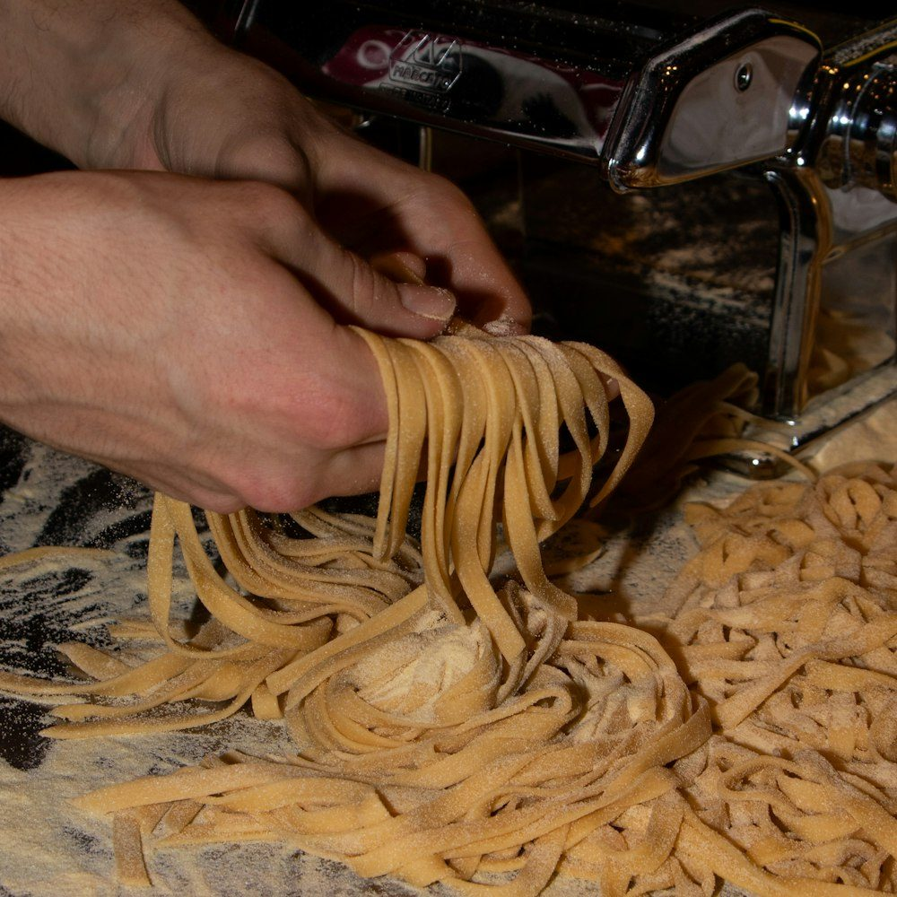

Nieuw najaarsprogramma
Koken leer je met je handen
Workshops in kleine groepen, met chefs die hun vak kennen. Je kookt zelf, je proeft zelf en je neemt het recept mee naar huis.
- workshops per seizoen
- 12
- chefs
- 8
- deelnemers per groep
- max. 14
